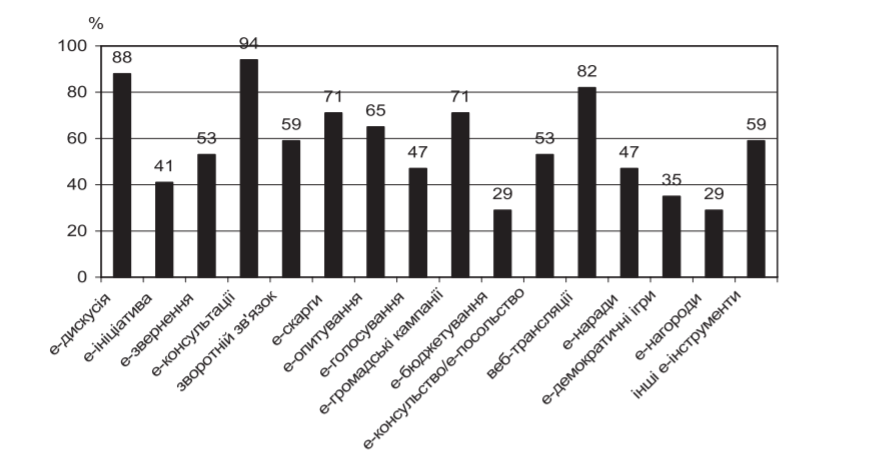
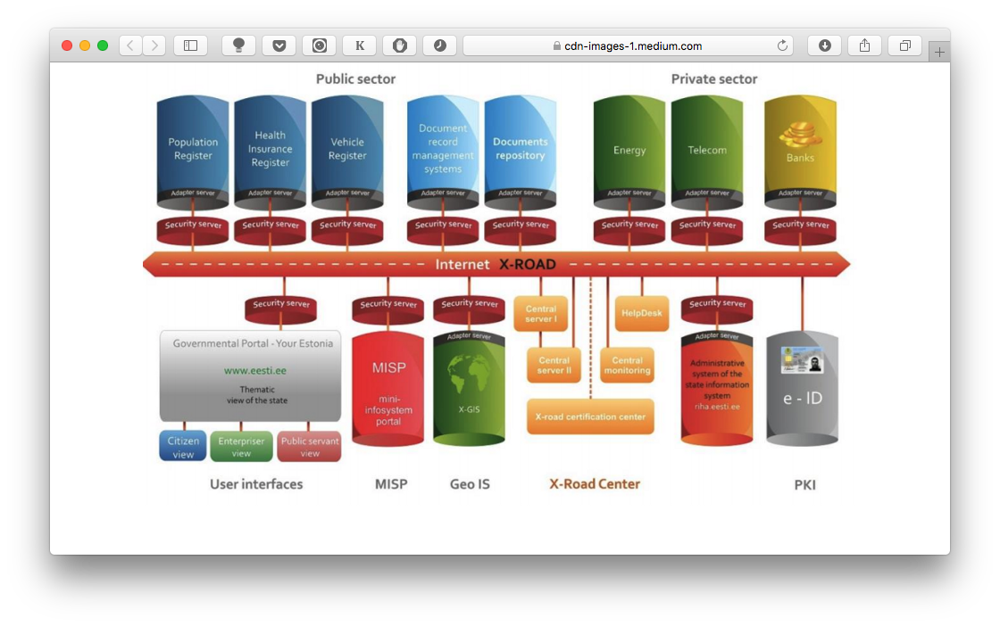
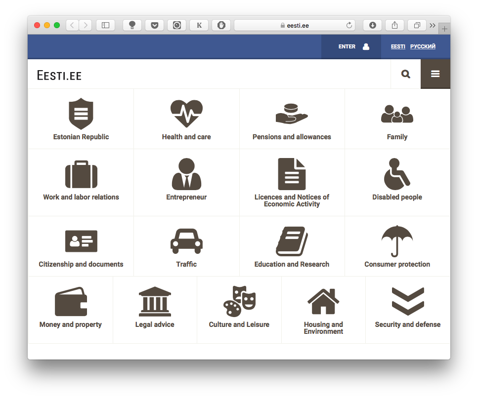
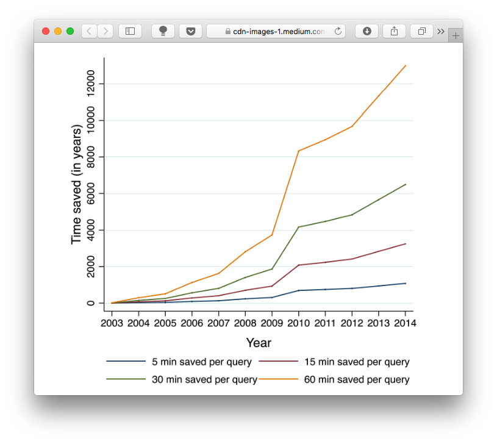

Що таке елетронне урядування?
Демократизація публічного управління, у тому числі, введення в електронний уряд електронної демократії, обумовило появу нового терміну – «електронне урядування». Щодо визначення електронного урядування застосовуються різні підходи, кожен з яких розкриває його особливості в залежності від сфери застосування.
Електронне урядування — спосіб організації державної влади за допомогою систем локальних інформаційних мереж та сегментів глобальної інформаційної мережі, що забезпечує функціонування органів влади в режимі реального часу та робить максимально простим і доступним щоденне спілкування з ними громадян, юридичних осіб, неурядових організацій. Головною складовою електронного урядування є електронний уряд — єдина інфраструктура міжвідомчої автоматизованої інформаційної взаємодії органів державної влади та органів місцевого самоврядування з громадянами та суб'єктами господарювання. Він не є доповненням або аналогом традиційного уряду, а лише визначає новий спосіб взаємодії на основі активного використання інформаційно-комунікаційних технологій (ІКТ) з метою підвищення ефективності надання державних послуг.
Етапи розвитку електронного урядування
- На першому етапі створюються веб-ресурси різних міністерств і відомств, що містять інформацію про їхню місію і напрямки діяльності. Сайти державних органів, як правило, не підтримуються централізовано і не об'єднуються в єдиний портал.
- На другому етапі з'являються перші елементи інтерактивності (наприклад, відправлення питань і одержання відповідей громадян за допомогою електронної пошти). Постійно публікуються новини про діяльність державних органів влади.
- Третій етап характеризує поява повноцінної інтерактивності — можливості здійснювати операції (сервіси) в режимі онлайн (наприклад, сплатити штраф, замовити паспорт, продовжити дію деяких ліцензій і патентів тощо). Така конкретизація роботи електронного управління, що полягає вже не стільки в інформуванні, скільки в обслуговуванні, припускає створення спеціальних сайтів для підтримки цих сервісів не тільки для центральних, але і для міських і навіть районних органів влади.
- Четвертий етап — створення об'єднаних порталів різних відомств і служб, через які можна здійснювати будь-які види трансакцій, для яких раніше було потрібно звертатися безпосередньо в державний орган. Через регіональні портали стає можливою реєстрація підприємств, оформлення фінансових документів, легалізація іноземних документів тощо. З'являються регіональні портали, що поєднують у собі як увесь спектр державних послуг, так і послуги недержавного сектора — підключаються системи електронної комерції, інтернет-банкінгу.
- На п'ятому етапі відбувається створення електронної системи державного управління на основі єдиних стандартів, а також урядового порталу як єдиної точки доступу до всіх послуг — і для громадян, і для бізнесу. Більшість фахівців вважає, що найвищим ступенем розвитку електронної демократії є запровадження електронної системи волевиявлення (електронного голосування).
Функції та основні напрямки діяльності електронного урядування
Електронне урядування виконує такі основні функції:
- підвищення якості та доступності державних послуг для громадян, спрощення процедур та скорочення адміністративних витрат;
- підвищення якості адміністративних та управлінських процесів, забезпечення контролю за результативністю діяльності органів виконавчої влади з одночасним забезпеченням належного рівня інформаційної безпеки;
- забезпечення відкритості інформації про діяльність органів виконавчої влади, розширення доступу до неї та надання можливості безпосередньої участі громадян та інститутів громадянського суспільства у процесах підготовки та експертизи проектів рішень, які приймаються на всіх рівнях державного управління;
- видача дозволів (на займання окремими видами підприємницької діяльності; на проведення мітингів, демонстрацій; на розміщення реклами та ін.), у тому числі акредитація, атестація, сертифікація;
- легалізація документів (консульська легалізація), нострифікація (визнання дипломів, виданих в інших країнах) та верифікація (встановлення достовірності сертифікатів про походження товарів);
- визнання певного статусу, прав особи (призначення пенсій, субсидій).
Наслідки впровадження електронного урядування
- Відкритість та прозорість діяльності публічної адміністрації.
- Економія часових та матеріальних ресурсів.
- Підвищення якості надання адміністративних послуг.
- Забезпечення доступу до публічної інформації за допомогою сучасних інформаційних технологій.
- Звільнення службовців від рутинної роботи.
- Деперсоніфікація взаємовідносин громадян, представників бізнесу у взаєминах із державними чиновниками.
- Створення єдиного «пункту контакту» громадян із державними структурами.
- Можливість цілодобового отримання адміністративних послуг.
- Підвищення рівня демократизації суспільства.
Отже, електронне урядування здатне змінити саму природу влади, зробити її більш прозорою та підконтрольною громадськості. Воно створює умови для нормального розвитку бізнесу, поліпшення інвестиційного клімату, зростання економіки, а також забезпечує реальну участь громадян у політичних процесах.
Електронне урядування в Україні
Розвиток інформаційного суспільства в Україні передбачає цілеспрямовану узгоджену діяльність всіх органів державної влади та органів місцевого самоврядування. У формуванні державної політики розвитку е-урядування в Україні виділяють декілька етапів:
- І етап (1998—2006) - прийняття Законів України «Про електронні документи та електронний документообіг», «Про національну програму інформатизації», «Про електронний цифровий підпис», низки актів уряду, які започатковували формування нормативно-правової бази інформатизації, а саме побудову: телекомунікаційної системи, системи національних інформаційних ресурсів, інформатизацію стратегічних напрямів розвитку економіки, безпеки та оборони, соціальної сфери.
- ІІ етап (2007 – 2015) - ухвалено закони України «Про основні засади розвитку інформаційного суспільства в Україні на 2007—2015 роки», «Про захист інформації в інформаційно-телекомунікаційних системах», а також сукупність інших нормативно-правових актів, спрямованих на конкретизацію та деталізацію вищевказаних законів.
- ІІІ та основний етап розвитку електронного урядування почався в 2015 році після прийняття Коаліційної угоди парламентських фракцій Верховної Ради України (2014 рік) та Стратегії сталого розвитку «Україна — 2020»
Розгалуження розвитку електронного урядування України на 2 моделі розвитку e-Gov 1.0 та e-Gov 2.0 почалось в 2015 році після залучення до розробки програмного забезпечення волонтерів та іноземних фахівців
Мета впровадження е-урядування в Україні
Метою впровадження е-урядування в Україні є розвиток електронної демократії задля досягнення європейських стандартів якості електронних державних послуг, відкритості та прозорості влади для людини та громадянина, громадських організацій, бізнесу. При цьому мова йде не про інформатизацію наявної системи державного управління, а про використання можливостей ІКТ для задоволення потреб людини та громадянина, що передбачає:
- підвищення якості та доступності державних послуг для людини та громадянина, спрощення процедур та скорочення адміністративних витрат;
- підвищення якості адміністративних та управлінських процесів, забезпечення контролю за результативністю діяльності органів державної влади та місцевого самоврядування з одночасним забезпеченням належного рівня інформаційної безпеки;
- забезпечення відкритості інформації про діяльність органів державної влади та органів місцевого самоврядування, розширення доступу до неї та надання можливості безпосередньої участі людини і громадянина та інститутів громадянського суспільства у процесах підготовки та експертизи проектів рішень, що приймаються на всіх рівнях державного управління.
Стратегічні завдання щодо розвитку електронного урядування в Україні
Стратегічні завдання щодо розвитку електронного урядування необхідно визначити відповідно до тих переваг, які надають ці технології у розвитку суспільства та держави:
- забезпечення прав людини і громадянина на віддалений доступ до всіх видів відкритої державної інформації, що має індивідуальну та суспільну значимість;
- залучення людини і громадянина до участі у державних справах;
- подальше вдосконалення технологій державного управління;
- подолання інформаційної нерівності;
- організація надання послуг юридичним та фізичним особам в інтегрованому вигляді дистанційно - через Інтернет та інші засоби;
- перебудова відносин органів державної влади та органів місцевого самоврядування з людиною та громадянином;
- сприяння розвитку економіки;
- системоутворююче законодавче забезпечення.
Базові принципи впровадження електронного урядування в Україні
Впровадження електронного урядування є не самоціллю, а передусім засобом підвищення ефективності на основі докорінної перебудови роботи державних органів. У світі не існує єдиного підходу щодо впровадження технологій електронного урядування, проте у більшості країн приділяється значна увага наступним ключовим принципам:
Реформування процесів.
Головною передумовою успішного впровадження електронного уряду є розуміння того, що воно полягає не лише в автоматизації існуючих процесів і усуненні неефективних ланок. Передусім йдеться про створення нових процесів і нових відносин між суб’єктами управління. Використання ІКТ не є виключно інструментом економії коштів.Лідерство.
Впровадження електронного урядування вимагає сильного політичного лідерства. Щоб добитися переходу до електронного уряду, на всіх рівнях виконавчої влади повинні бути присутні державні службовці, які розуміють важливість цих технологій та усвідомлюють загальну мету державної політики і налаштовані активно проводити реформи. Сильне лідерство покликане також забезпечити безперервний притік фінансових ресурсів та інформації, необхідних для виконання поставлених завдання, а також співпрацю державних органів різного рівня. Воно також може зміцнити ініціативи із впровадження електронного урядування, проводячи її через всі необхідні стадії під виразним політичним гаслом.Стратегічні інвестиції.
Враховуючи реалії жорсткої економії фінансових ресурсів, необхідно виділити головні, пріоритетні проекти, фінансування яких здійснювалося б за «захищеним» принципом. Такі проекти повинні характеризуватися чіткою суспільною цінністю, вимірюваною за визначеними критеріями.Співпраця.
Необхідно запроваджувати нові форми взаємин, як між державними установами, так і в рамках співпраці з приватним сектором і неурядовими організаціями. Передусім, державним установам, доведеться подолати неготовність спільно працювати одна з одною. З іншого боку - співпраця урядових установ, приватних підприємств і неурядових організацій може допомогти політикам в справі проведення результативних реформ і прискорити процес впровадження електронного урядування.Участь громадян.
Сама концепція електронного урядування орієнтована на задоволення потреб громадянина. Щоб виробити таке орієнтоване на громадянина бачення, необхідно створити систему дослідження інтересів та потреб громадян, у тому числі з використанням сучасних технологій
Найбільші досягнення України у сфері електронного урядування
- Створення міністерства цифрової трансформації (2019).
Застосунок «Держава і я».
"Дія" є онлайн-сервісом, де можна отримати державні послуги, завантажити цифрові варіанти документів, таких як посвідчення водія, студентський квиток та створити електронний кабінет громадянина.Відкриття рахунків онлайн.
Таке відкриття рахунків є можливим через здійснення віддаленої ідентифікації та верифікації клієнта, зокрема через систему BankID та використання електронного підпису. Міністерство цифрової трансформації планує використовувати застосунок "Дія" для допомоги Національному банку з функціоналом віддаленої ідентифікації та верифікації клієнтів.Національна платформа е-демократії «ВзаємоДія».
Це онлайн-майданчик, де українці зможуть вільно комунікувати з держорганами та долучатися до ухвалення рішень.
Заплановані ініціативи:
Офіційна електронна адреса.
Присвоєння офіційної електронної адреси юридичним особам, фізичним особам підприємцям та фізичним особам. Відповідний законопроєкт було внесено до Верховної Ради України 16 липня 2020 року.Грошова допомога громадянам, які не можуть самостійно оплатити доступ до мережі Інтернет.
Збільшення частки електронного урядування у державному управлінні має бути підкріплене належним доступом усього населення України до мережі Інтернет. Саме тому Міністерство цифрової трансформації планує запровадити адресну допомогу громадянам, які не можуть самостійно оплачувати базовий доступ до мережі Інтернет.Повний перехід на ID-картки.
14 серпня 2020 року до Верховної Ради України було подано проєкт Закону про паспорт громадянина України у формі книжечки № 3986 ("Законопроєкт № 3986"). Ним передбачено, що паспорт громадянина України у формі книжечки є чинним до закінчення строку його дії – досягнення особою 25-річного та 45-річного віку.
Впровадження е-урядування в Україні повинно забезпечити якісно новий рівень управління державою та суспільством в цілому, зміцнить довіру до держави та її політики, вдосконалить взаємодію між органами державної влади та органами місцевого самоврядування, бізнесом, громадянами та державними службовцями.
Подальше здійснення політики розбудови системи електронного урядування прямо залежить від політико-правового становища суспільства, фінансово-економічних можливостей держави. Зазначені фактори здатні внести суттєві корективи в процес електронного урядування, у темпи проведення реформаторських заходів.
Відеоматеріали на тему електронного урядування в Україні:
Зарубіжний досвід впровадження е-урядування
Як зазначається у Декларації 1999 року Європейського Союзу: «істинно демократичне інформаційне суспільство, засноване на фундаментальних цінностях Ради Європи, може бути побудоване за наявності основ політики, яка заохочує :
- доступ і участь,
- компетентність і підготовленість,
- творчість і різноманіття та забезпечує відповідний захист.»
Розвиток е-урядування ускладнюється:
- неефективним управлінням проектами;
- технологічними поразками;
- проблемами з „недоліками першого кроку”;
- нестабільним фінансуванням;
- нереалістичними політичними вимогами.
Принципові положення зарубіжного досвіду:
- зосередженість на дійсних потребах громадян і бізнесу (підхід “від життя”);
- використання новітніх методів і рішень, співробітництво і партнерство з високотехнологічним бізнесом і промисловістю;
- оптимізація процедур взаємин держави, громадян і бізнесу, відпрацювання механізмів електронної демократії;
- відповідна до приватного сектору якість послуг;
- урахування специфіки потреб різних соціальних верств і груп населення; зосередження уваги на найбільш болючих темах суспільства;
- надання державних послуг через різні канали, включаючи цифрове ТБ, мобільні телефони; смартфони; розвиток мережі центрів виклику і центрів суспільного доступу;
- підтримка проектів установ та місцевих органів влади, здійснення координації і вироблення стандартів, які дозволяють створювати вертикально і горизонтально інтегровані державні мережні ресурси;
- ефективне вирішення питань захисту мереж і інформації;
- реалізація механізмів, що забезпечують захист прав особистості;
- оптимізація структури державного апарата і всієї системи державного управління, навчання державних службовців новим формам роботи; удосконалення управлінської культури; створення системи стимулів і мотивації;
- континентальноєвропейську (країни Західної, Центральної та Східної Європи);
- англо-американську (США, Канада, Великобританія);
- азіатську (Південна Корея, Сінгапур).
- наявністю наддержавних інститутів (Європарламент, Єврокомісія, Європейський суд), рекомендації яких обов’язкові для виконання усіма країнами Європейського Союзу;
- високим ступенем інтеграції європейських народів і країн, що проявляється у єдиній валюті, єдиному загальноєвропейському інформаційному просторі, вільному пересуванні капіталів та інформації;
- жорстким законодавством, що регулює інформаційні відносини та інформаційні потоки, які циркулюють у європейському інформаційному просторі
Управління та діяльність національних урядів і наддержавних структур у цій моделі обумовлені застосуванням ІКТ із орієнтацією на потреби громадян-користувачів інформаційними мережами і системами. Такий тип управління дає змогу споживачеві (виборцю, громадянину, представникові громадськості) отримувати публічну інформацію у режимі реального часу і успішно виконувати свій громадянський обов’язок, використовуючи систему електронного голосування або отримуючи публічні послуги.
У Європейському Союзі головний акцент у питаннях побудови електронної держави робиться на досягненні соціальної єдності націй, що до нього належать, і Європейського Співтовариства загалом. При цьому основною небезпекою для себе європейці вважають цифровий розрив між громадянами похилого віку, кількість яких зростає з кожним роком, не готовими і часто нездатними до роботи в мережі Інтернет, та молодим поколінням. Інформаційне суспільство для європейців – це засіб збереження багатонаціонального багатства Європи. Інвестиції в ІКТ – це, насамперед, інвестиції в людей. В європейських країнах все більший розвиток отримують різноманітні форми зворотного зв’язку.
Отже, континентально-європейська модель побудови електронного уряду будується на досягненні єдності нації. Громадяни, завдяки розвитку державної служби та підвищення ефективності виконання обов’язків службовцями за допомогою електронного уряду, повинні побачити в державі партнера. Така модель передбачає розвиток форм зворотного зв’язку, публічне обговорення та експертизу соціальнозначимих рішень у мережі Інтернет.
Англо-американська модель електронного уряду ( на прикладі США) :
Можна констатувати безсумнівні успіхи США в області побудови електронного уряду була реформована політика і структура публічного управління інформаційними потоками та ІКТ, зокрема:
- завдання створення електронного уряду стало національним та одним із пріоритетних;
- владні повноваження з проведення політики створення електронного уряду були максимально сконцентровані як на федеральному рівні, так і на рівні державних установ;
- була створена система персональної відповідальності за інформатизацію державних органів;
- політика і практика створення електронного уряду були уніфіковані й стали прозорими і підзвітними.
Також успішно практикується діяльність із оприлюднення офіційної статистичної інформації. Тим самим реалізуються права громадян на свободу інформації. Стосовно англо-американської моделі інформатизації держави можна зробити висновок, що вона будується на принципах:
- сервісного надання громадянам публічних послуг;
- виключення надлишкових функцій органів влади
- швидкого задоволення потреб громадян за допомогою ІКТ;
- розвитку транзакцій;
- розвитку сервісів із надання офіційної статистичної інформації в мережі Інтернет;
- ефективного використання соціальної інформації в органах влади.
Азіатська модель електронного уряду ґрунтується на специфічному стилі управління, азіатському типі корпоративної культури та багатошаровій системі публічного управління, організованій за принципом ієрархічної піраміди.
Уряд Південної Кореї при формуванні моделі електронної демократії зробив основний акцент на задоволенні інформаційних потреб населення та впровадженні ІКТ в систему культури й освіти. Успішний розвиток електронної демократії дав змогу громадянам Південної Кореї засвоїти думку про власну значимість і можливість реально впливати на справи держави та суспільства.
Важливим і корисним у корейському досвіді є осмислена та далекоглядна політика держави у справі розвитку електронної комунікації. Створення єдиного інформаційного простору в межах всієї країни переносить у практичну площину основний принцип демократії: народ – джерело і носій влади.
Розробка інфраструктури й бази для електронного уряду в Південній Кореї почалась ще в 1987 р. Завдяки цій системі громадяни країни можуть здійснювати практично всі операції, не виходячи з дому: починаючи від покупок у магазинах і закінчуючи оплатою рахунків та оформленням документів. У громадських місцях можна побачити спеціальні термінали, в яких легко знайти потрібну інформацію або роздрукувати будь-яку довідку.
Південна Корея щорічно займає перше-друге місце в світі, як за середньою швидкістю Інтернету, так і за ступенем охоплення населення широкосмуговим доступом до мережі Інтернет. У держсекторі країни існує 100-відсоткова система електронного документообігу. Паперовий варіант мають тільки найважливіші доповіді та довідки на рівні міністра і вище. Функціонування системи електронного уряду дало змогу, наприклад, у період 2008 – 2010 рр. заощадити для держбюджету понад 1 млрд дол. і скоротити число службовців майже на дев’ять тис. осіб. Загальний соціальноекономічний ефект за згаданий період оцінюється в 16 млрд дол.
Азіатська модель впровадження електронного уряду ґрунтується на інформатизації соціальної сфери – культури, освіти, охорони здоров’я, а також налагодження механізмів електронної комунікації. В азіатських країнах ставиться мета скорочення державного апарату шляхом застосування ІКТ. Робиться акцент на розвиток національної науково-дослідної та дослідно-конструкторської інфраструктури ІКТ, створенні сприятливих умов розвитку електронної комерції. Орієнтація на громадян передбачає, наприклад, установку терміналів отримання електронних послуг та довідкової інформації в часто відвідуваних закладах.
Портали публічних послуг намагаються максимально інтегрувати з мобільними пристроями для полегшення процедури взаємодії з державою. Окрім того, розрізнені сайти відомств інтегруються в єдиний інформаційний простір.
Досвід використання інструментів е-демократії в країнах ЄС
За даними дослідження проекту EPACE, найбільш часто використовувалися: електронні консультації (веб-сервіси для отримання зворотного зв’язку з громадянами з питань політики та державна підтримка участі громадян у плануванні політики), електронні дискусії (форуми громадян та представників державних органів) та веб-трансляції (запис засідань передається через Інтернет, які дозволяють людям дивитися і слухати такі події, як парламентські дебати або засідання колегіальних органів)

Інформація (інформаційна участь громадськості) – активне забезпечення комплексною, збалансованою та об’єктивною інформацією, щоб допомогти громадськості про проблеми, альтернативи, можливості та рішення для демократичних питань. Громадськість отримує інформацію про планування та прийняття державних рішень, не впливаючи безпосередньо на ці процеси.
Консультації (консультативна суспільна участь). Громадяни можуть висловити свою думку з важливіших питань, впливаючи безпосередньо на прийняття рішення з важливих суспільних питань. Комунікації частіше здійснюються в обох напрямках. Влада, починаючи з етапу планування до етапу прийняття публічних рішень, залучає громадськість до консультацій з конкретних питань рішення, що приймається. Громадськість подає свої пропозиції оголошеним до обговорення державним рішенням за власною ініціативою або ініціює знизу підготовку та розгляд важливого суспільного рішення.
Співробітництво (спільна участь громадськості та влади) – участь громадян і груп громадян, наприклад, груп за інтересами, корпорацій, об’єднань і некомерційних організацій, у суспільних справах, задля підвищення якості та доступності результатів демократичних процесів. Ступінь громадського впливу є достатньо високою і може включати в себе спільне прийняття політичних рішень.
Приклад Естонії
Більш ніж за два десятиліття після здобуття незалежності Естонія «поставила на ноги» вражаючу цифрову інфраструктуру.
Перші цифрові вибори були проведені в Естонії у березні 2007 року, коли онлайн проголосували лише 3,4% виборців. Відтоді цей показник суттєво зріс. Для роботи з системою електронного голосування потрібно використовувати особисту ідентифікаційну смарт-карту, цифровий підпис і кард-рідер.
У чому «плюси» такого голосування?
Передусім, його інтерфейс простіший і приємніший, ніж паперовий бюлетень дрібним шрифтом. Але головне — протидія корупції. Дані, введені виборцями зашифровуються онлайн та відправляються на сервер голосування. Всі ці дані пізніше розшифровуються у день голосування у конкретний час. Кожен голос можна ідентифікувати й «підняти» інформацію у будь-який час, що запобігає проведенню різного роду фальсифікацій, на кшталт сумнозвісних українських «каруселей».
Запровадження X-Road
Коли Естонія запустила систему електронних паспортів у 2002 році, країна була «роз’єднаною» («disconnected society»), зазначалося у звіті Світового Банку. Першим кроком на шляху до подолання цифрового розриву стало питання доступу до інтернету. За підтримки телекомунікаційного сектору та банків, в рамках ініціативи Look@World була проведена інформаційна кампанія про електронне врядування та побудовано сотні точок доступу до інтернету в країні.
Однак подолання цифрового розриву виявилося недостатньо. Потрібно було спорудити потужну інформаційну систему для державного апарату. Отже, Естонія створила X-Road — безпечну систему обміну даними між громадянами, особами, що проживають в Естонії, державними відомствами та приватними компаніями. Всі сторони надають інформацію, яка потрібна для надання особам сервісів, якими вони можуть користуватися за допомогою електронного паспорта: тут можна і машину продати, і переглянути історію захворювань чи заповнити податкову декларацію.
Ще одним ключем до успіху системи електронного врядування стало забезпечення прозорості. Якщо зайти на державний портал State Portal, перед мешканцями Естонії відкривається можливість побачити, хто саме у системі X-Road має доступ до їхньої інформації, та перевірити, хто скористався цим правом і використав інформацію та в яких цілях. Словом, при будь-яких порушеннях, громадяни мають можливість зреагувати. 
Нині значна більшість естонців володіє електронними паспортами, що не дивно, оскільки програма електронного врядування зобов’язує громадян їх отримувати. Вражає статистика користування. У 2014 році картками скористалися понад 80 млн разів, і щороку цей показник зростає.
У чому переваги такої моделі?
Основну перевагу електронної системи врядування можна побачити на прикладі системи голосування — швидкість і прозорість. Мешканці країни, які голосують онлайн, заощаджують гроші та час. Приватний сектор і державні установи також отримують переваги, адже їм непотрібно збирати інформацію або створювати платформу «з нуля». В Естонії можна створити компанію за 18 хв, заповнити податкову декларацію — за 5 хв.
Якщо припустити, що в середньому мешканець Естонії економить 15 хв часу, залагоджуючи справи через X-Road, то за 2014 рік в країні вдалося зекономити вражаючих 2,8 млн годин — або 3225 роки. Такий розрахунок опублікований у звіті Світового Банку, оприлюдненому в червні 2015 року. Іншими словами, продуктивність X-Road в 2014-му дорівнює за часом обсягу роботи 3225 осіб цілодобово щотижня упродовж календарного року.
Відеоматеріали на тему зарубіжного досвіду впровадження е-урядування:
Недоліки Е-урядування в Україні та методи їх вирішення
Незважаючи на очевидні переваги застосування електронного урядування, в Україні існує ряд ризиків, що можуть завадити реалізувати нову концепцію, серед яких – технічні проблеми, що виникають у програмному забезпеченні, яке часто є неліцензованим.
Значною проблемою є застарілість матеріально-технічної бази та телекомунікаційної інфраструктури деяких державних органів влади, особливо на місцевому рівні, що не гарантує інформаційну безпеку та захист персональних даних учасників.
Також можливими перешкодами на шляху до запровадження електронного урядування є недосконала нормативно-правова база,обмеженість фінансових ресурсів, фаховий рівень державних службовців, їхній консерватизм і бюрократизм, що заважає опанувати навички користування електронними інструментами та каналами комунікацій;
Перешкоди для громадян – це низький рівень політичної культури, цифрова нерівність, брак розуміння про переваги застосування інформаційно-комунікаційних технологій у державному управлінні, відсутність мотивації цікавитися державними справами та пропонувати свої ідеї для вирішення державних проблем.
Можливі методи вирішення цих недоліків:
- Узгодити наявну нормативно-правову базу електронного урядування з підзаконними актами виконавчої влади та ухвалити нові закони, які б регулювали повноваження та обов’язки органів державної влади в умовах електронного урядування. Нове законодавство має чітко визначити функції та принципи роботи місцевої влади, зафіксувати можливості громадян бути залученими до процесу ухвалення державних рішень;
- Запровадити державні програми розвитку інформаційно-комунікаційних технологій на державній службі та навчальні програми щодо електронного урядування, популяризувати нові канали комунікацій представників влади з громадянами;
- Визначити перелік державних послуг, які громадяни зможуть отримати в електронному вигляді;
- Створити розгалужену оновлену технічну інфраструктуру електронного урядування;
- Запровадити електронний документообіг в органах державної влади та місцевого самоврядування, поширити використання електронного цифрового підпису;
- Забезпечити регулярне інформування громадян про державні справи через електронні канали комунікації. Громадяни мають отримати відкритий доступ до чинної державної інформації про діяльність органів державної влади та місцевого самоврядування;
- Гарантувати інформаційну безпеку під час користування інструментами електронної участі та захист персональних даних учасників електронних дискусій.
Використані джерела
- Концепція розвитку електронного урядування в Україні / О.А. Баранов, М.С. Демкова, С.В. Дзюба, А.В. Єфанов, І.Б. Жиляєв, Е.Л. Клепець, Ю.Місников, О.Арво, Т.В. Попова, І.А. Рубан, А.І. Семенченко, С.А. Чукут. За ред. А.І. Семенченко, 2009р. – 16 с.
- Проект навчального посібника «Концепцептуальні засади розвитку електронного урядування в Україні» / О.А. Баранов, М.С. Демкова, С.В. Дзюба, А.В. Єфанов, І.Б. Жиляєв, Е.Л. Клепець, Ю. Місніков, Отт Арво, Т.В. Попова, І.А. Рубан, А.І. Семенченко, С.А. Чукут. | За ред. А.І. Семенченко, 2009р. - 82с
- Електронне урядування. Опорний конспект лекцій. Дзюба С.В., Жиляєв І.Б., Полумієнко С.К, Рубан І.А., Семенченко А.І. За ред. А.І. Семенченка. – Київ, 2012
- Б. Дзюндзюк ЗАРУБІЖНИЙ ДОСВІД ВЗАЄМОДІЇ ОРГАНІВ ВЛАДИ З ГРОМАДЯНАМИ В ІНФОРМАЦІЙНОМУ СУСПІЛЬСТВІ| ISSN 2070-4011. ЕФЕКТИВНІСТЬ ДЕРЖАВНОГО УПРАВЛІННЯ. 2016. ВИП. 3 (48). Ч. 1
- https://www.kmu.gov.ua/news/e-uryaduvannya-klyuch-do-reform-v-ukrayini
- http://www.center.gov.ua/component/k2/item/3451-розвиток-електронного-урядування-та-електронної-демократії-в-україні
- https://everlegal.ua/ukrayina-pidnyalasya-na-13-mists-u-reytyngu-gotovnosti-do-zaprovadzhennya-elektronnogo-uryadu
- https://thedigital.gov.ua
- https://nachasi.com/tech/2017/06/29/e-estonia/
- https://www.wikipedia.org/
Проект підготували:
- Гакавий Олександр

- Кокошко Ярослав
- Паскевич Діана